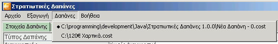

- Κέλυφος: Αλλάζει το κέλυφος (skin) του προγράμματος. Για να ενεργοποιηθεί όμως απαιτείται επανεκκίνηση του προγράμματος.
- Μόνο μια φορά: Ορισμένα δικαιολογητικά στη δαπάνη επαναλαμβάνονται πολλές φορές. π.χ. Το Πρωτόκολλο Αγοράς και Διάθεσης γίνεται εις τριπλούν. Το πρόγραμμα τα εξάγει όσες φορές πρέπει για να μην χρειάζεται να εκτυπώνετε μια - μια τις σελίδες των δικαιολογητικών. Οστόσο, αν θέλετε τα εξαγόμενα αρχεία να είναι μικρότερα κατα πολύ, μπορείτε με αυτή την επιλογή να τα εξάγετε στο τελικό αρχείο μόνο μια φορά. Ένας άλλος καλύτερος λόγος για να κάνετε αυτό το πράγμα είναι σε περίπτωση που θέλετε να τροποποιήσετε ένα δικαιολογητικό π.χ. την «Αναλυτική Επιμέτρηση». Στην πρώτη περίπτωση πρέπει να την τροποποιήσετε τρείς φορές, ενώ αν επιλέξετε το «Μόνο μια φορά» την τροποποιείτε μία και την εκτυπώνετε τρείς φορές.
Δαπάνες

Εδώ εμφανίζονται όλες οι ανοικτές δαπάνες. Επιλεγμένη είναι η τρέχουσα. Αν θέλουμε να πάμε σε άλλη (να κάνουμε άλλη τρέχουσα), αρκεί να την επιλέξουμε από αυτό το παράθυρο.
Βοήθεια
Υπάρχουν οι κλασικές δύο επιλογές σε αυτό το menu που υπάρχουν σε κάθε πρόγραμμα:
- Βοήθεια: Εμφανίζει αυτήν εδώ τη βοήθεια.
- Περί...: Εμφανίζει ένα μικρό παράθυράκι που δίνει πληροφορίες για την έκδοση του προγράμματος, τον προγραμμάτιστή, την άδεια χρήσης κ.τ.λ.